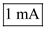
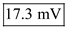

Step 1:
The emitter junction area of one transistor is twice the other transistor.

Calculate the expression for emitter bias current,  .
.
Substitute  for
for  .
.
Thus, the value of the emitter current of transistor 2 is .
Calculate the value of  .
.
Substitute  for
for  .
.
Thus, the value of the emitter current of transistor 1 is .
Step 2:
Calculate the value of collector current,  .
.
Substitute for  .
.
Thus, the value of collector current, is .
Calculate the value of collector current,  .
.
Substitute  for .
for .
Thus, the value of collector current, is .
Step 3:
Consider the expressions for emitter current.
Calculate the value of by taking the ratio of emitter currents.
Substitute  for and for
for and for  .
.
Step 4:
The difference input to the differential amplifier is,
Consider the expressions for collector current.
Consider the ratio of collector current to calculate the difference input.
Substitute  for
for  , for and
, for and  for .
for .

Thus, difference input to the differential amplifier is, .